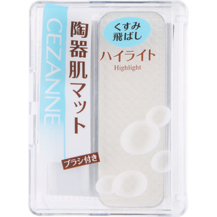

返回列表
产品名称：フェースコントロールカラー １ホワイト（マット）

セザンヌ化粧品 フェースコントロールカラー １ホワイト（マット） ５．５ｇ
メーカー セザンヌ化粧品
JANコード 4939553004912
商品の特徴
パウダータイプのフェイスカラーです。
マットタイプのホワイトです。
シャープな立体感をプラスします。
ブラシ付です。
成分・分量
【成分】
タルク、ジメチコン、メチルパラベン、プロピルパラベン、トコフェロール、（＋／－）酸化鉄
用法及び用量
【使用方法】
Ｃゾーン（目の下）やＴゾーン（眉上～鼻筋）などのハイライトゾーンに塗布してください。